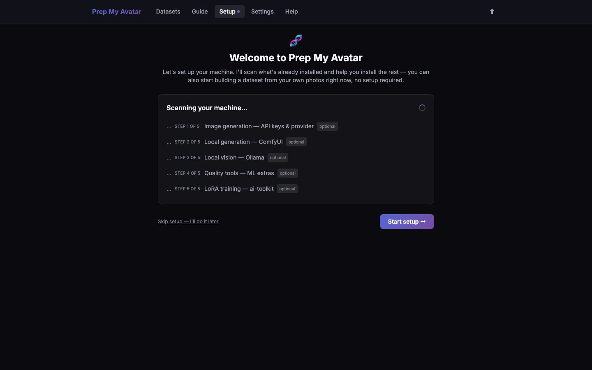

First run · 1 of 21
Step 1: Open Prep My Avatar
Prep My Avatar runs on your computer and opens in a web browser. You do not need an API key, a graphics card, or any AI tools to open it and begin reviewing photos.

Before you begin
You need a Windows, macOS, or Linux computer and an internet connection for the first installation. Keep five or more clear photos ready for your first test. Use photos you own or have permission to process.
On macOS or Linux, install Python before continuing. Python 3.10 can run the core app. If you may install the optional machine-learning tools, use Python 3.11 or 3.12. Open Terminal and run python3 --version. If Terminal says the command was not found, install Python 3.11 or 3.12, close and reopen Terminal, then run the check again. If python3 reports another version after you installed one of those, run the matching python3.11 --version or python3.12 --version, then replace python3 -m venv .venv below with that matching command—for example, python3.11 -m venv .venv.
Do this
### Windows
- Download or clone the repository and extract it if it arrived as a ZIP file.
- Open the extracted
prep-my-avatarfolder. - Double-click
start.bat. - Leave the terminal window open while you use the app.
### macOS or Linux
- Open the Terminal application.
- Type
cd, including the space, drag theprep-my-avatarfolder into the Terminal window, and press Enter. - Run these commands one line at a time:
python3 -m venv .venv
source .venv/bin/activate
python -m pip install -r backend/requirements.txt
python backend/source_launcher.py --install --root . --data-dir data
python data/source-launcher.py --root . --data-dir data- Leave Terminal open. Open <http://127.0.0.1:5050/> if the browser does not open automatically.
The repository README has the canonical Installation and launch instructions, including later launches and Docker.
You are finished when
Your browser shows Welcome to Prep My Avatar or the Setup screen. On first launch, choose Start setup to configure tools now. The next five pages explain its five screens one at a time.
The Setup checklist groups its five tools by purpose: choose at least one image provider, configure local vision for automatic captioning and framing, then add quality tools or LoRA training only if you need those optional enhancements. A tick means that item has been configured; it does not mean the corresponding app is running now.
After Setup, Start this session checks the same five tool groups and shows which local services are running or usable today. Keeping the lists aligned makes every total traceable to a visible row.
Setup is optional as a whole: Skip setup — I'll do it later takes you directly to Datasets. Step 4 explains how to configure and verify a local-vision service; after it is configured, the service does not need to remain running for Setup to stay complete.
If the page does not open, keep the terminal visible and use the error message with the Troubleshooting reference in this guide.